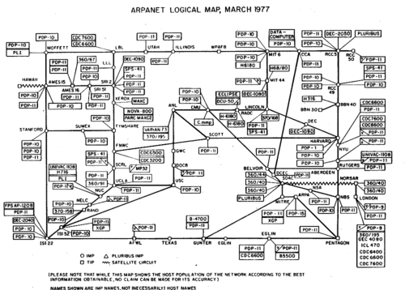
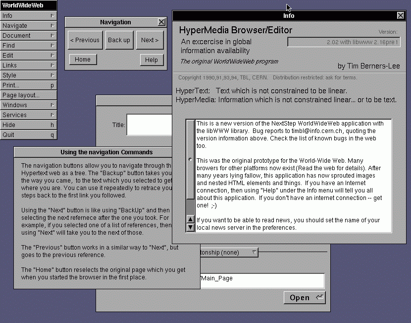

Compreender como chegamos as modernas aplicações web exige olhar para trás e analisar os marcos tecnológicos que moldaram a conectividade global.
Na década de 1960, o Departamento de Defesa dos EUA, através da DARPA, criou a ARPANET, considerada a percursora da internet moderna. O objetivo inicial era conectar comptadores de investigação militar e acadêmica de forma descentralizada.

Com a expansão das redes, tornou-se necessário padronizar a comunicação. O conjunto de protocolos TCP/IP (Transmission Control Protocol/Internet Protocol) foi desenvolvido para permitir que redes diferentes conversassem entre si. Posteriormente, o DNS (Domain Name System) surgiu para traduzir endereços IP numéricos em nomes fáceis de memorizar (como ifsc.edu.br).
No final da década de 1980, o cientista britânico Tim Berners-Lee propos a criação da World Wide Web(WWW) enquanto trabalhava no CERN. A ideia era criar um sistema de hipertexto partilhando na internet.
"A Web não e apenas uma rede de computadores, é um sistema de informação acessível a todos." - Tim Berners-Lee
Para que a Web funcionasse, foram criadas as bases fundamentais:

Enquanto a Web 1.0 era essencialmente estatica e focada apenas na leitura de documentos, as aplicações web modernas (Web 2.0 e posteriores) são altamente dinâmicas, interativas, permitindo colaborações em tempo real e processamento complexo no lado do cliente e do servidor.
| Ano | Evento | Importância para a Web ou Internet |
|---|---|---|
| 1969 | ARPANET | Estabeleceu a base tecnológica para a computação de pacotes e interligação de redes. |
| 1973 | Protocolo TCP/IP | Padronizou a comunicação entre redes diferentes, permitindo a expansão da internet. |
| 1983 | Adoção do TCP/IP | A ARPANET adota oficialmente o TCP/IP como protocolo padrão, consolidando a arquitetura da internet. |
| 1984 | Implementação do DNS | Facilitou a navegação ao substituir endereços de IP numéricos por nomes legíveis por humanos. |
| 1989 | Proposta da WWW | Tim Berners-Lee propõe a World Wide Web no CERN. |
| 1991 | Lançamento da WWW | A Web torna-se publicamente acessível, permitindo a criação de sites e navegadores. |
| 1993 | Mosaic | Lançamento do navegador Mosaic, popularizando o acesso a páginas web. |